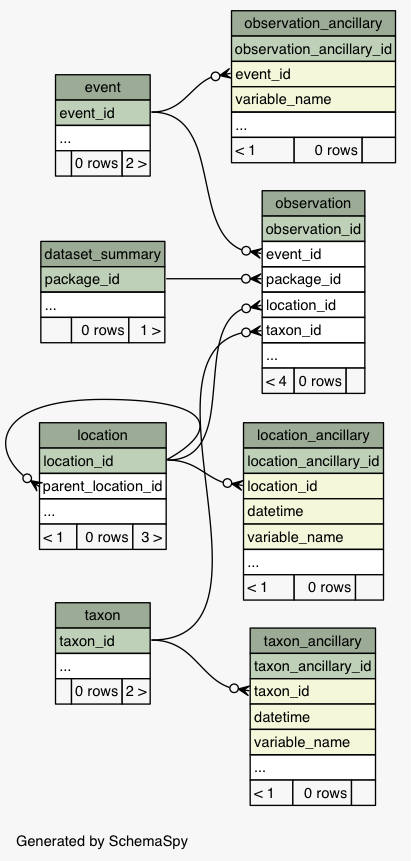
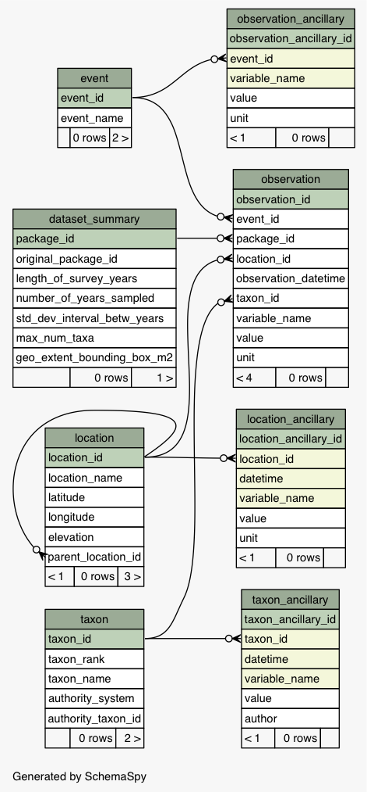

Tables
Relationships
Utility Tables
Constraints
Anomalies
Columns
Donate
SchemaSpy Analysis of
edi_sandbox
.
ecocom_dp
- All Relationships
Generated by
SchemaSpy
Generated by
SchemaSpy
on Tue Mar 13 15:28 PDT 2018
Legend:
Primary key columns
Columns with indexes
Excluded column relationships
Dashed lines show implied relationships
<
n
> number of related tables
All columns

